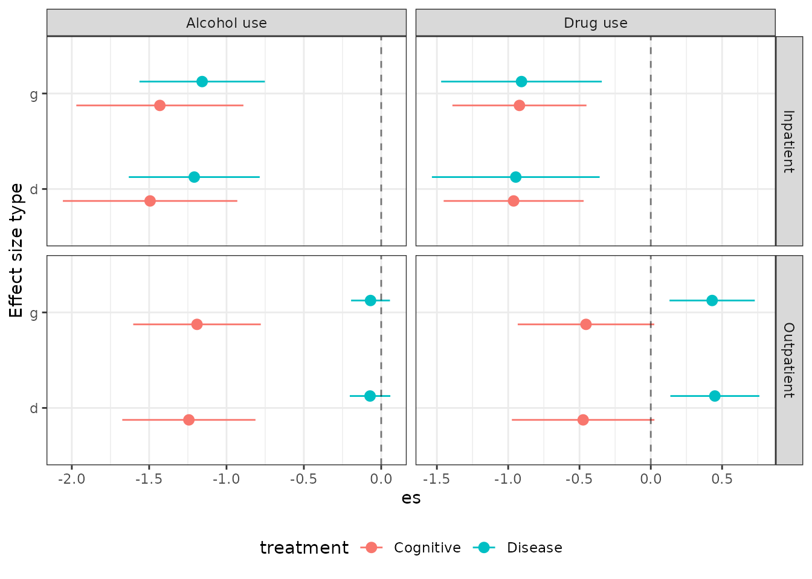

Entering data, calculating effect sizes, and cluster bias correction when there is clustering in one group only
Mikkel H. Vembye
Last modified 2023-01-31
Source:vignettes/Entering-data.Rmd
Entering-data.RmdIntroduction
This vignette/article provides examples of how to enter data from
rather complex result tables and how to calculate effect size and
conduct cluster bias correction for such data, using functions from the
VIVECampbell R package.
Loading necessary packages and helpfull options
NOTE: If you haven’t previously worked with R, I recommend that you
start reading “Kom
godt i gang med metaanalyse i R” and embark on the first chapters of
R4DS. The most important package
to learn at this stage is by all means dplyr.
#install.packages("devtools")
#devtools::install_github("MikkelVembye/VIVECampbell")
library(VIVECampbell)
library(purrr)
library(dplyr)
library(tidyr)
library(gt)
library(ggplot2)
options(pillar.sigfig = 4) # Ensure tibble include 4 digits
options(tibble.width = Inf) # Ensure that all columns are printed
options(dplyr.print_min = 310) # Specifying the number of row printed
options(scipen = 10) # Specified how many digits are printed be R shall preint scientific numbers
options(dplyr.summarise.inform = FALSE) # Avoids summarize info from tidyverseFisher & Bentley (1996) data and structure
Talk about the data structure with measures (i.e., pretest, posttest, and differences measures) nested within treatment groups (i.e., Disease-and-recovery group, Cognitive-behavioral group, and the Usual group treatment) which are nested within setting (i.e, inpatient vs. outpatient), which again is nested within setting (i.e., Alcohol use, Drug use, Social and family, Psychological functioning).
Important for understanding the use of group_by
function, when we calculate effect sizes.
| Table 1 | ||||||||||||
| Reproduced from Table 4 in Fisher (1996, p. 1248) | ||||||||||||
| Inpatient setting | Outpatient setting | |||||||||||
|---|---|---|---|---|---|---|---|---|---|---|---|---|
| Subscale and therapy group |
Pretest score |
Posttest score |
Difference |
Pretest score |
Posttest score |
Difference |
||||||
| Mean | SD | Mean | SD | Mean | SD | Mean | SD | Mean | SD | Mean | SD | |
| Alcohol use | ||||||||||||
| Disease-and-recovery group | .469 | .12 | .1 | .5 | .4 | .2 | .469 | .12 | 1 | .5 | .4 | .2 |
| Cognitive-behavioral group | .441 | .13 | .1 | .5 | .4 | .2 | .441 | .13 | 1 | .5 | .4 | .2 |
| Usual group treatment | .349 | .22 | .1 | .5 | .4 | .2 | .349 | .22 | 1 | .5 | .4 | .2 |
| Drug use | ||||||||||||
| Disease-and-recovery group | .107 | .09 | .1 | .5 | .4 | .2 | .107 | .09 | 1 | .5 | .4 | .2 |
| Cognitive-behavioral group | .116 | .10 | .1 | .5 | .4 | .2 | .116 | .10 | 1 | .5 | .4 | .2 |
| Usual group treatment | .117 | .12 | .1 | .5 | .4 | .2 | .117 | .12 | 1 | .5 | .4 | .2 |
Show the rep function and its importance
rep("hej", 6)
#> [1] "hej" "hej" "hej" "hej" "hej" "hej"Enter data from Fisher & Bentley (1996)
The practice, we often use when we enter data for studies is to name
the data object using the first author’s surname and the year of the
publication, i.e., an object with the following structure:
AuthorYear. For the present study used in this vignette
this guideline means that we will coin the data object
Fisher1996. One important part of calculating effect size
is to make clear documentation of how and from where we obtained data we
use for effect size calculation. At a minimum you much write some like
“Find data in Table 4 (p. 1248)” before the codes/chunk in which
construct the result data. In some cases when studies provide enough
information to calculation the pre-post test correlation, \(\rho\), the first calculation can be done
when entering the data. When studies, such as Fisher (insert reference),
report raw pre and post test means and standard deviations (SDs) plus
the mean difference and its standard error, we can use the correlation
formulas given in Chapter
6 of the Cochrane Handbook. For the treatment group, we can
calculated the pre-post test correlation, \(\rho\) via
\[ \rho_T = \frac{SD^2_{T,pre} +
SD^2_{T,post} - SD^2_{T,diff}}{2 \times SD_{T,pre} \times SD_{T,post}}
\]
and for the control group
\[ \rho_C = \frac{SD^2_{C,pre} + SD^2_{C,post} - SD^2_{C,diff}}{2 \times SD_{C,pre} \times SD_{C,post}} \]
We will later on pool these correlation estimates. In order to get one \(\rho_{pool}\) for each comparison and each outcome: To do so - INTRODUCE log transformation refer to Borenstein et al. (2009) (to VIVE students: Find e-version of this book in our literature folder)
Fisher1996 <- tibble::tibble(
Outcome = rep(c("Alcohol use", "Drug use"), each = 6),
Setting = rep(c("Inpatient", "Outpatient"), each = 3, 2),
treatment = rep(rep(c("Disease", "Cognitive", "TAU"), 2), 2),
# N is imputed/guested for illustrative purposes only, because we only know the total sample
# of the treatment groups (N = 19). We here assume that the control group have similar size as
# the treatment group.
N = 9,
m_pre = c(
# All values entered below follow the same structure as presented here
.469, .441, .349, # Alcohol use - inpatient
.725, .598, .682, # Alcohol use - outpatient
.107, .116, .117, # Drug use - inpatient
.219, .200, .322 # Drug use - outpatient
),
sd_pre = c(
.12, .13, .22,
.11, .16, .17,
.09, .10, .12,
.11, .12, .05
),
m_post = c(
.070, .018, .141,
.521, .152, .492,
.001, .008, .087,
.167, .044, .216
),
sd_post = c(
.11, .05, .21,
.11, .15, .27,
.01, .02, .12,
.10, .05, .15
),
m_diff = c(
.399, .423, .208,
.204, .446, .190,
.106, .108, .030,
.052, .196, .106
),
sd_diff = c(
.02, .09, .04,
.01, .02, .11,
.09, .09, .02,
.02, .08, .11
),
# Here we test if the mean differences reported in the study are in line
# with the differences between the reported pre and post means. It seems to
# be the case that they make a reporting error for the cognitive outpatient
# group mean difference on drug use. Wrtie about the error can be on many levels
mean_diff_test = m_pre - m_post,
# From the Cochrane handbook (Higgins & Thomas, 2019, p. 166)
r = (sd_pre^2 + sd_post^2-sd_diff^2)/(2 * sd_pre * sd_post ),
# Obtained from Wilson (2016). Converting sd_diff to raw sd
sdg = sd_diff/sqrt(2*(1-r)),
z = 0.5 * log( (1+r)/(1-r) ),
v = 1/(N-3)
); Fisher1996
#> # A tibble: 12 × 15
#> Outcome Setting treatment N m_pre sd_pre m_post sd_post m_diff
#> <chr> <chr> <chr> <dbl> <dbl> <dbl> <dbl> <dbl> <dbl>
#> 1 Alcohol use Inpatient Disease 9 0.469 0.12 0.07 0.11 0.399
#> 2 Alcohol use Inpatient Cognitive 9 0.441 0.13 0.018 0.05 0.423
#> 3 Alcohol use Inpatient TAU 9 0.349 0.22 0.141 0.21 0.208
#> 4 Alcohol use Outpatient Disease 9 0.725 0.11 0.521 0.11 0.204
#> 5 Alcohol use Outpatient Cognitive 9 0.598 0.16 0.152 0.15 0.446
#> 6 Alcohol use Outpatient TAU 9 0.682 0.17 0.492 0.27 0.19
#> 7 Drug use Inpatient Disease 9 0.107 0.09 0.001 0.01 0.106
#> 8 Drug use Inpatient Cognitive 9 0.116 0.1 0.008 0.02 0.108
#> 9 Drug use Inpatient TAU 9 0.117 0.12 0.087 0.12 0.03
#> 10 Drug use Outpatient Disease 9 0.219 0.11 0.167 0.1 0.052
#> 11 Drug use Outpatient Cognitive 9 0.2 0.12 0.044 0.05 0.196
#> 12 Drug use Outpatient TAU 9 0.322 0.05 0.216 0.15 0.106
#> sd_diff mean_diff_test r sdg z v
#> <dbl> <dbl> <dbl> <dbl> <dbl> <dbl>
#> 1 0.02 0.399 0.9886 0.1327 2.582 0.1667
#> 2 0.09 0.423 0.8692 0.1760 1.330 0.1667
#> 3 0.04 0.208 0.9838 0.2220 2.403 0.1667
#> 4 0.01 0.204 0.9959 0.1100 3.090 0.1667
#> 5 0.02 0.446 0.9938 0.1789 2.883 0.1667
#> 6 0.11 0.19 0.9771 0.5143 2.230 0.1667
#> 7 0.09 0.106 0.05556 0.06548 0.05561 0.1667
#> 8 0.09 0.108 0.5750 0.09762 0.6550 0.1667
#> 9 0.02 0.03 0.9861 0.1200 2.481 0.1667
#> 10 0.02 0.052 0.9864 0.1211 2.491 0.1667
#> 11 0.08 0.156 0.875 0.1600 1.354 0.1667
#> 12 0.11 0.106 0.86 0.2079 1.293 0.1667SHOW DIFFERENT ORDER WITH
Calculating Cohens’ d and Hedges’ g
Add text
treat_label_fisher <- unique(Fisher1996$treatment)[1:2]
fisher_function <- function(label){
Fisher1996 |>
dplyr::filter(treatment != label) |>
group_by(Setting, Outcome) |>
summarise(
study = "Fisher1996",
treatment = treatment[1],
es_method = "diff-in-diffs",
M = sum(v*z)/sum(v),
ppcor = (exp(2*M)-1)/(exp(2*M)+1),
Nt = N[1],
Nc = N[2],
N_tot = Nt + Nc,
df_ind = N_tot,
s_pool = sqrt(sum((N - 1) * sd_post^2) / df_ind),
diff_t = m_post[1] - m_pre[1],
diff_c = m_post[2] - m_pre[2],
es_d = (diff_t - diff_c) / s_pool,
v_d = sum(1/N) * (2*(1-ppcor)) + es_d^2/(2*df_ind),
se_d = sqrt(v_d),
W_d = sum(1/N) * (2*(1-ppcor)),
J = 1 - 3/(4*df_ind-1),
es_g = J * es_d,
v_g = J^2 * v_d,
se_g = sqrt(v_g),
W_g = J^2* W_d,
.groups = "drop"
) |>
relocate(study)
}
Fisher1996_est <-
map_dfr(treat_label_fisher, ~ fisher_function(label = .x))
Fisher1996_est
#> # A tibble: 8 × 23
#> study Setting Outcome treatment es_method M ppcor Nt
#> <chr> <chr> <chr> <chr> <chr> <dbl> <dbl> <dbl>
#> 1 Fisher1996 Inpatient Alcohol use Cognitive diff-in-diffs 1.866 0.9533 9
#> 2 Fisher1996 Inpatient Drug use Cognitive diff-in-diffs 1.568 0.9167 9
#> 3 Fisher1996 Outpatient Alcohol use Cognitive diff-in-diffs 2.556 0.9880 9
#> 4 Fisher1996 Outpatient Drug use Cognitive diff-in-diffs 1.324 0.8677 9
#> 5 Fisher1996 Inpatient Alcohol use Disease diff-in-diffs 2.493 0.9864 9
#> 6 Fisher1996 Inpatient Drug use Disease diff-in-diffs 1.269 0.8534 9
#> 7 Fisher1996 Outpatient Alcohol use Disease diff-in-diffs 2.660 0.9903 9
#> 8 Fisher1996 Outpatient Drug use Disease diff-in-diffs 1.892 0.9555 9
#> Nc N_tot df_ind s_pool diff_t diff_c es_d v_d se_d W_d
#> <dbl> <dbl> <dbl> <dbl> <dbl> <dbl> <dbl> <dbl> <dbl> <dbl>
#> 1 9 18 18 0.1439 -0.423 -0.208 -1.494 0.08277 0.2877 0.02077
#> 2 9 18 18 0.08110 -0.108 -0.03 -0.9617 0.06270 0.2504 0.03701
#> 3 9 18 18 0.2059 -0.446 -0.19 -1.243 0.04826 0.2197 0.005321
#> 4 9 18 18 0.1054 -0.156 -0.106 -0.4743 0.06505 0.2551 0.05880
#> 5 9 18 18 0.1580 -0.399 -0.208 -1.209 0.04661 0.2159 0.006037
#> 6 9 18 18 0.08028 -0.106 -0.03 -0.9467 0.09005 0.3001 0.06516
#> 7 9 18 18 0.1944 -0.204 -0.19 -0.07203 0.004473 0.06688 0.004329
#> 8 9 18 18 0.1202 -0.052 -0.106 0.4493 0.02536 0.1593 0.01976
#> J es_g v_g se_g W_g
#> <dbl> <dbl> <dbl> <dbl> <dbl>
#> 1 0.9577 -1.431 0.07592 0.2755 0.01905
#> 2 0.9577 -0.9211 0.05751 0.2398 0.03394
#> 3 0.9577 -1.191 0.04426 0.2104 0.004881
#> 4 0.9577 -0.4543 0.05967 0.2443 0.05394
#> 5 0.9577 -1.157 0.04275 0.2068 0.005538
#> 6 0.9577 -0.9067 0.08260 0.2874 0.05977
#> 7 0.9577 -0.06899 0.004103 0.06406 0.003971
#> 8 0.9577 0.4303 0.02327 0.1525 0.01812Cluster bias correction when there is clustering in the treatment group only
Add text
# [INSERT EXAMPLE WHEN FUNCTIONS ARE ADDED TO THE PACKAGE]Visualize effect size data
Fisher1996_est |>
tidyr::pivot_longer(
cols = -c(study:diff_c, J),
names_to = c('.value', 'Category'),
names_sep = '_'
) |>
mutate(
CI_L = es - se * qnorm(.975),
CI_U = es + se * qnorm(.975)
) |>
ggplot(aes(x = es, y = Category, xmin = CI_L, xmax = CI_U,
color = treatment)) +
geom_pointrange(position = position_dodge2(width = 0.5, padding = 0.5)) +
geom_vline(xintercept = 0, linetype = "dashed", color = "black", alpha = 0.5) +
facet_grid(Setting~Outcome, scales = "free") +
theme_bw() +
theme(legend.position = "bottom") +
ylab("Effect size type")